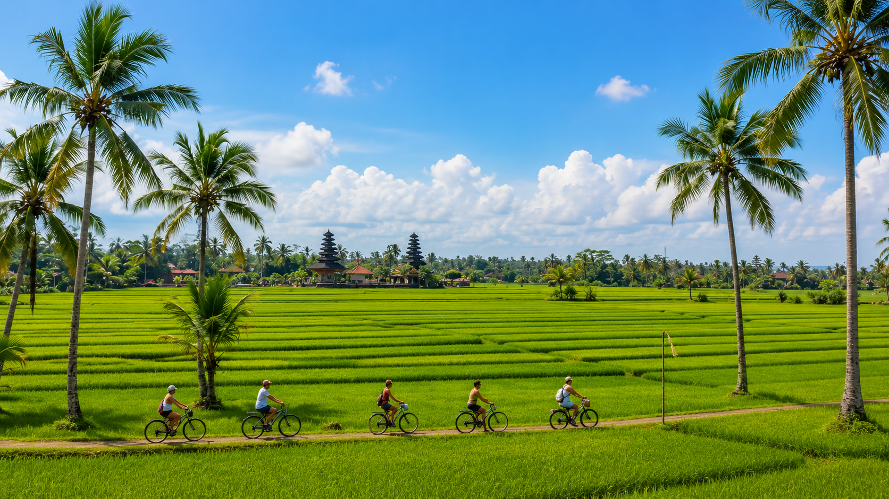
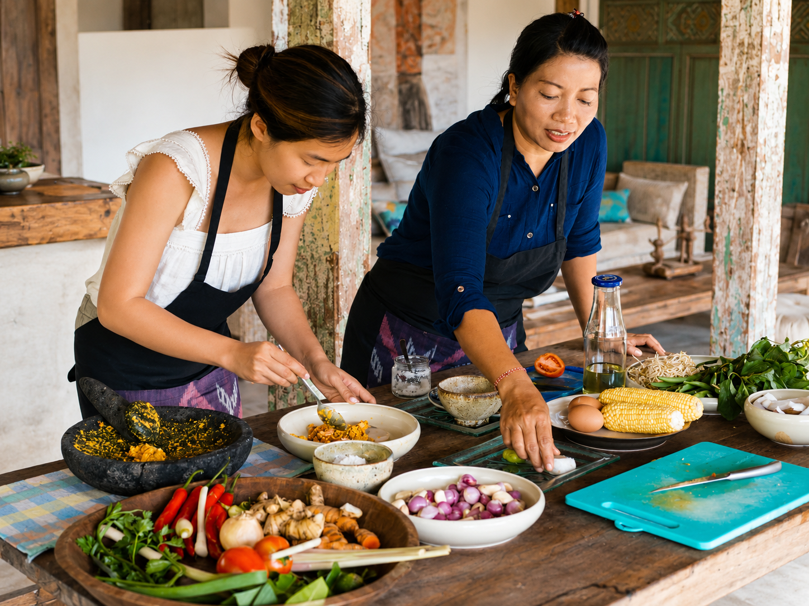

Culture & Nature
Ubud Cultural Tour
Discover rice terraces, temples, Monkey Forest, local villages, and the cultural heart of Ubud.
Private carFlexible itinerary
FromIDR 650K/ car
View TourPrivate journeys across Bali with local drivers, comfortable transport, and flexible itineraries.
From Ubud's cultural heart to waterfalls, mountains, beaches, temples, and scenic countryside routes.
Discover rice terraces, temples, Monkey Forest, local villages, and the cultural heart of Ubud.

Visit Lempuyang Temple, Tirta Gangga, Taman Ujung, and scenic eastern Bali viewpoints.

Enjoy Mount Batur views, lake scenery, coffee plantations, and Bali's highland atmosphere.

Explore beaches, Uluwatu Temple, dramatic ocean cliffs, and a memorable Bali sunset.

Discover waterfalls, lake temples, mountain scenery, and the quieter side of Bali.

Explore UNESCO rice terraces, traditional countryside, and one of Bali's most iconic sunset temples.
Choose an activity on its own or combine it with one of our private tours. Prices vary by activity and partner availability.

Ride through jungle tracks, local villages, rivers, and muddy trails.

Enjoy a guided river adventure surrounded by tropical Bali scenery.
Take in tropical views and one of Bali's most popular outdoor experiences.

Explore countryside roads, villages, and rice-field landscapes at a slower pace.

Learn local recipes and discover Balinese ingredients in a hands-on cooking experience.

Experience a traditional Melukat ritual with local cultural guidance.

Start your Bali journey comfortably with a private airport pickup from Ngurah Rai International Airport to your hotel or villa.
Tell us your travel date, pickup area, group size, and the places you want to visit. We will help arrange the route.
Plan a Custom Trip